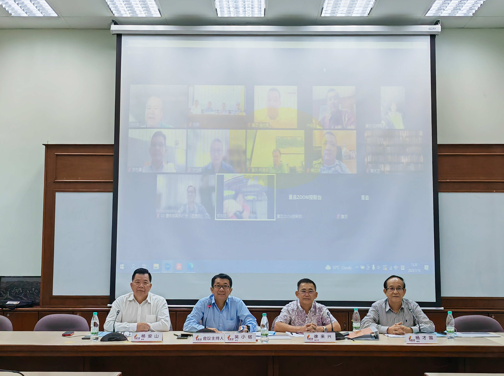

董事强则华教强 董总成立“强化华小董事会功能委员会”
华小的创办和发展历程
马来西亚华文教育的发展历程超过220年。华文小学经历了几个发展阶段，从私塾，新式的学堂、学校直到现代学校，教学媒介语亦从华人各籍贯方言改用华语。
华小的创校者主要是华人社会的热心人士和各类团体如乡团、商会、行团等。佛教界人士，基督教会团体、传教士或信徒，都有创办一些华小。这些华小有本身的学校董事会负责管理学校。此外，在殖民时期，由马来半岛一些“邦政府”、北婆罗洲（沙巴）政府、砂拉越一些“地方政府”所创办的华小或接管的民办华小（这两类华小的数量极少），以及全国各地园丘公司早期创办的华小，基本上已交由华小董事会管理，而沙巴和砂拉越有极少数量的华小至今仍未成立学校董事会。在《1996年教育法令》下，华小以华语为主要教学媒介语，不论该校由谁所创办，每一所华小都必须有学校董事会负责管理学校。我国绝大部分的现有华小（初计约98%）是由民间社会所创办的。全国华小属于国民型华文小学，实施教育部的课程、教材和考试，并获得联邦政府拨款和委派教师及非教师职员。
法令赋予华小董事会管理华小的权力和责任
华小董事会受华社或创校者的委托，长期以来在管理、维护和发展华小方面扮演重要角色。从1920年学校注册法令到现行的1996年教育法令，都规定华小董事会是管理华小的机构。这些法令规定学校以及每一位学校董事和教师都必须注册，并赋予董事会管理学校的权力和责任。
华小董事会被边缘化
在当局的“一种源流学校”单元化教育政策和行政措施下，从1969年起就陆续试图废除华小董事会，或以家教协会取代董事会，或把董事会改为财务委员会。经华社强烈反对而失败后，就转为边缘化华小董事会，不让董事会顺利地履行法令赋予管理学校的权力和责任。这包括不让董事会知晓学校户头资金账目详情，不让签署学校支票，不让处理学校食堂招标、开标和签署合约等职权。当局以校地拥有权把学校区分为所谓的“全津贴学校”和“半津贴学校”，对华小施于不公平不合理的拨款分配，并要董事会把学校土地和建筑物移交给教育部。
1969年关于西马教师服务调查的《阿兹报告书》提出废除学校董事会。政府于1970年代初把教师吸纳为公务员，制定《1972年教育（修订）法令》在《1961年教育法令》里增加第26（A）条款，授权教育部长可指定一个日期来解散任何一所获全部资助的学校的董事会。当局也颁布实施《1973年家长与教师协会条例》。
华社各界强烈反对废除学校董事会。在教师被吸纳为公务员后，时任教育部长于1971年底表示，除了雇佣和解聘教职员的权力外，学校董事会的其他权力获得保留。然而，实际情况是华小董事会至今在履行董事会职权方面仍面对各种阻难。
加强华小董事会组织运作和功能
华小董事会长期被边缘化，再加上董事会本身的组织运作不健全，各种人事和人为偏差，以及对学校管理、行政操作、教育法令、教育条例以及教育部通令、指南和教育蓝图等往往缺乏了解，致使董事会职权旁落，未能更有效和充分地发挥董事会的功能。
在《1996年教育法令》下，华小必须有董事会，根据此法令和此法令下由教育部长制定的教育条例，以及董事会本身的学校管理章程，来管理华小。董事会的每一位董事必须注册，并获得董事注册证，以履行董事职责。董事会也必须确保学校的财产和资金获得恰当管理，以及学校的纪律获得充分维持。如果董事会、董事长或董事触犯该法令的相关条款或教育条例，则将面对相应的刑罚，例如罚款或监禁或两者兼施。此外，教育部长可委任额外董事，或暂停或开除全部或任何董事，或解散董事会并委任另外一个不同的董事会，或暂停或取消学校的拨款，而且教育部总注册官也可取消学校或董事的注册。
有鉴于此，华小董事会应加强组织运作和功能，恢复和有效地履行董事会的权力和责任，维护华小和董事会。当中工作包括设立董事会办公室和保存文件档案，处理学校土地拥有权和税务问题，提升对学校管理、行政操作和教育理念的认识，完善董事会的学校管理章程和赞助人规则，确保每位董事申请注册并获得董事注册证，制定学校软硬体发展蓝图和计划，以及财政预算案向教育部申请拨款。华小董事会必须维护华小的核心本质特征，即（1）华小的教学、考试和行政的主要媒介语是华语；（2）华小必须有董事会管理学校，且董事会具有主权；（3）华小传承和发扬中华文化。
在《1962年教育（拨款）条例》及其后修订条例下，华小董事会基本上由5组人士组成，即学校赞助人代表、产业信托人代表、校友代表、家长代表和官委代表。此外，校长是家教协会的顾问和董事会的秘书，但不是学校董事。校友会、家教协会以及校长肩负的行政与教学队伍，各有不同的定位和责任。在维护和发展华教的大前提下，董事会、家教协会、校友会、学校行政与教学队伍，应分工合作，努力办好学校和教育。由此可见，董事会具有广泛的社会代表性，凝聚社会各界力量，体现了民间社会办校兴学、培养人才的精神价值，同时也协助政府推进国家教育发展。
成立“强化华小董事会功能委员会”
马来西亚华校董事联合会总会（简称“董总”）的宗旨包括团结本会会员，维护和发展华文教育；加强和巩固华文学校董事的联系；代表华文学校董事会与政府商讨有关华文学校一切事宜。
2006年，董总曾发起华小董事觉醒运动，董事会至今的一些弱点仍需改善。因此，董总中央委员会于2022年12月17日议决成立“强化华小董事会功能委员会”，并赋予该委员会四大任务，即（1）推动华小董事会对本身使命、职责和权力的理解，进而加强华小董事会的运作；（2）协助董总各属会促进州内华小董事会的联系和交流；（3）提升华小董事熟悉董事会运作原则和了解学校的行政；（4）凝聚华小三机构、华团和社会人士对维护华小董事会主权与地位的共识，共同维护与发展华文小学。
 线上与线下委员合照。
强化华小董事会功能委员会名表
主任：吴小铭
副主任：包章文、徐来兴
委员： 卢成良、杨安山、杨才国、涂兴全、潘光耀、叶光威、罗志昌、黄水芝、蔡文铎、林湧斌、
李兆祥、吴令富、郑东旺
强化华小董事会功能委员会于2023年1月16日召开第一次会议，一致通过2023年工作计划如下：
- 展开全国华小董事会事务调查
- 策动各属会举办州内董事交流会、工作坊
- 举办校董培训
- 出版系列指导性、指南手册
- 设立专属网页
吉打、玻璃市董联会打响第一炮，首场培训营在日莱峰举办
由吉打董联会主办，玻璃市董联会协办的“吉玻华校董事培训营”，订于4月7日至9日在吉打日莱峰举行。这也是董总推动“强化华小董事会功能”的首场活动，意义重大。培训营以密集课程方式为吉打州和玻璃市的华校董事会成员进行为期三天的培训。
此外，森美兰华董联会将于4月16日在森州芙蓉举办“森州华教领袖交流会”，借此凝聚森州华校的董事会与家教协会成员对维护华小董事会主权与地位的共识，同时厘清董事会所扮演的角色及华小校地问题。
除了上述两场活动，董总将继续策动各州属会在州内举办各种形式的交流会、工作坊或培训营，冀望通过有关活动，加深华小董事对本身使命、职责和权力的理解，进而加强华小董事会的运作，更有效地发挥功能。
当全国各地华小董事会持续加强组织运作和发挥功能，将能更好地维护和发展华小，也有助于发掘和培养华教人才，进而壮大华教队伍，加强董总和各属会，结合广大群众力量，维护和发展华教，为国家作出贡献。